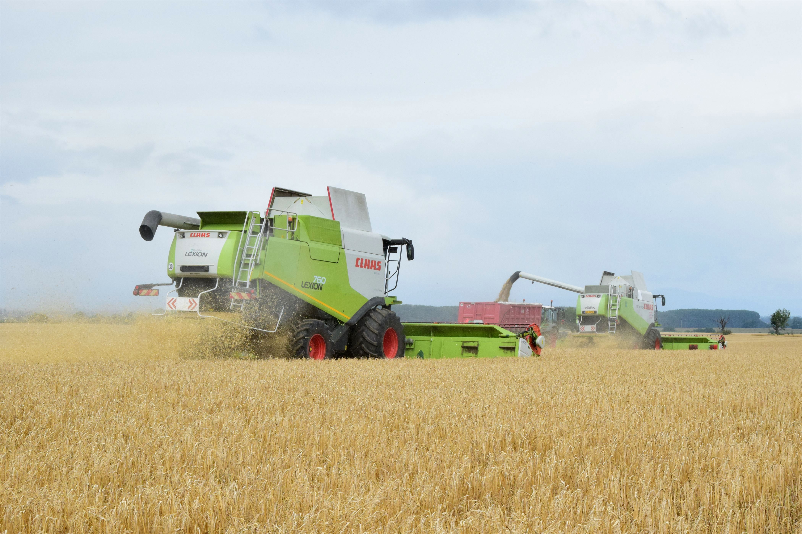

Žatva ide do finále
Štatistický úrad SR zverejnil ďalší odhad úrod vybraných poľnohospodárskych plodín na rok 2021. Odhad realizoval úrad k 15. augustu a hovorí o úrode obilnín 2,7 milióna ton, čo predstavuje o 6,2 % menší objem ako pred rokom, ale súčasne väčší objem, ako je priemer za posledných päť rokov. Najpestovanejšími obilninami na Slovensku sú dlhodobo pšenica a jačmeň, ktoré tvorili 93 % plôch osiatych hustosiatymi obilninami. Poľnohospodári očakávajú v tomto roku pri týchto dvoch plodinách hektárové výnosy nad hodnotou päťročného priemeru. Naopak, pri raži, ovse a tritikale je odhad hektárového výnosu nižší ako päťročný priemer.
Stalo sa praxou, že žatvu už nemôžeme hodnotiť len globálne, pretože úrody a kvalita sú rozdielne v rámci regiónov aj jednotlivých okresov. Je to spôsobené nerovnomerným rozložením zrážok a množstvom slnečných dní počas sezóny. Zažívame teda veľké výkyvy počasia, časté prívalové dažde a búrky, ktoré komplikujú aj zber plodín V posledných rokoch je veľkým regulátorom úrody aj poľovná zver.

Na juhu Slovenska
Odhad štatistického úradu kopírujú najmä južné oblasti Slovenska. Podľa Alexandra Pastoreka z AGROCOOP IMEĽ a.s. nemôžeme hovoriť o vyslovene zlom roku. Pestovatelia, ktorí však nestihli pozbierať úrodu pred zhoršujúcim sa počasím, majú určite problém s kvalitou a teda aj speňažovaním. Osiate plochy sú približne rovnaké, ako po minulé roky. „Ak to spriemerujeme, tak sme niekde o 10 – 20 % s úrodami nižšie, ale ak to hodnotíme dlhodobo, je to priemerný rok. Akýmsi ťahúňom je najmä pšenica, ktorá v našom regióne dosiahla vynikajúce výsledky,“ skonštatoval dlhoročný predseda RPPK Komárno. Repky sú už v regióne viac-menej zasiate, no problém je s nedostatkom vlahy. Ak v najbližších dňoch dôkladne nezaprší, poľnohospodári budú musieť vyorávať repku a nahrádzať ju inou plodinou.
Na východe Slovenska
Opačný problém je v okrese Humenné. Počasie tunajším poľnohospodárom nedovoľuje ukončiť žatvu a ani zasiať repku. Je to veľmi podobné takmer na celom severe územia. Veľký problém je však poľovná zver, ktorá tento rok požrala, čo videla. „Zver mi zničila tretinu úrody repky a na zvyšných poliach sme mali veľmi nízku úrodu. Pozorujeme tu aj stáda sedemdesiatich kusov na jednom hone. Každý sa chytá za hlavu, nikdy sme tu nič podobné nevideli,“ zhrozene hodnotí situáciu Ladislav Lukáč z AGROLUK, s.r.o. v Kamenici nad Cirochou. Úrody repky slabnú, preto s jej pestovaním končí v regióne viacero pestovateľov.
Celkovo zažil predseda RPPK Humenné veľmi náročný rok. Vlani na jeseň bola pôda v regióne podmáčaná a nebolo možné dostať sa na polia s ťažkou technikou. Len časť pšenice mali preto riadne zasiatu sejačkou. Osiate plochy však boli nakoniec rovnaké, ako v minulom roku. „Od októbra, ako bolo treba siať, vkuse pršalo. Ale vzhľadom na to, ako to celé prebiehalo, je úroda ešte ako tak prijateľná,“ zhodnotil Ladislav Lukáč.
Na severe Slovenska
V najvyššie položených oblastiach je žatva slabá. Jariny sú biedne. Všetko je posunuté – počasie oddialilo zberové práce na poliach. Mnohí teda ešte nemajú domlátené. Zber obilovín však nie je na Orave až taký významný. S výmerou približne 2 tisíc hektárov ide o zanedbateľnú výmeru v rámci Slovenska. „Kto sial jačmeň a ovos, má dnes zrejme historicky najnižšie úrody. Oziminy sú na tom o čosi lepšie, ale úroda je nižšia, ako boli poľnohospodári zvyknutí. S potravinárskou kvalitou sa nedalo vôbec počítať,“ zhodnotil úrodu predseda Podielníckeho roľnícko-obchodného družstva Bobrov Tomáš Luchava.
Čo sa týka objemových krmovín, prvé kosby boli v regióne posunuté, ale ďalšie už boli v stanovených časoch. Poľnohospodári majú pred sebou ešte zber liečivých plodín a chystajú sa už aj na prvé mráziky a ich vplyv na kukuricu na siláž. „Očakávame aj nižšie úrody, ako po minulé roky. Potrebujeme však ešte aspoň dva tri týždne, aby sme ich vedeli silážovať,“ vysvetlil predseda OPPK Dolný Kubín. Na severe našej krajiny je taktiež veľký problém s poľovnou zverou. Poľnohospodári majú informácie, že sa diviaky strieľajú viac ako kedysi, ale v porastoch to nie je vôbec cítiť. Stavy zveri stúpajú už niekoľko rokov geometricky a nie o pár kusov.
Aktuálny stav žatevného monitoringu SPPK k 31.08.2021.
|
Plodina |
Plocha |
Produkcia |
|||||
|
Plodina |
osiata k 20. 05. 2021 (ha) |
pozberaná od začiatku zberových prác (ha) |
pozberaná / osiata (%) |
celkom od začiatku zberu (t) |
úroda (t/ha) |
||
|
Pšenica ozimná |
288 424 |
284 151 |
99 |
1 704 836 |
6,00 |
||
|
Pšenica jarná |
28 029 |
25 731 |
92 |
113 128 |
4,40 |
||
|
PŠENICA spolu |
316 453 |
309 882 |
98 |
1 817 964 |
5,87 |
||
|
Jačmeň ozimný |
36 283 |
36 158 |
100 |
206 148 |
5,70 |
||
|
Jačmeň jarný |
65 418 |
63 535 |
97 |
310 593 |
4,89 |
||
|
JAČMEŇ spolu |
101 701 |
99 692 |
98 |
516 742 |
5,18 |
||
|
Raž ozimná |
9 749 |
9 453 |
97 |
33 412 |
3,53 |
||
|
Raž jarná |
85 |
85 |
100 |
203 |
2,38 |
||
|
Triticale |
8 318 |
7 731 |
93 |
29 752 |
3,85 |
||
|
Ovos |
14 519 |
11 548 |
80 |
32 932 |
2,85 |
||
|
Ostatné hustosiate obilniny |
3 028 |
1 350 |
45 |
3 683 |
2,73 |
||
|
HUSTOSIATE OBILNINY spolu |
453 853 |
439 742 |
97 |
2 434 688 |
5,54 |
||
|
Repka |
122 581 |
121 897 |
99 |
367 947 |
3,02 |
||